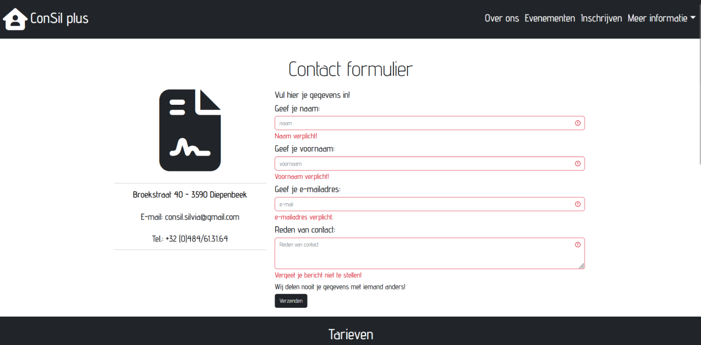
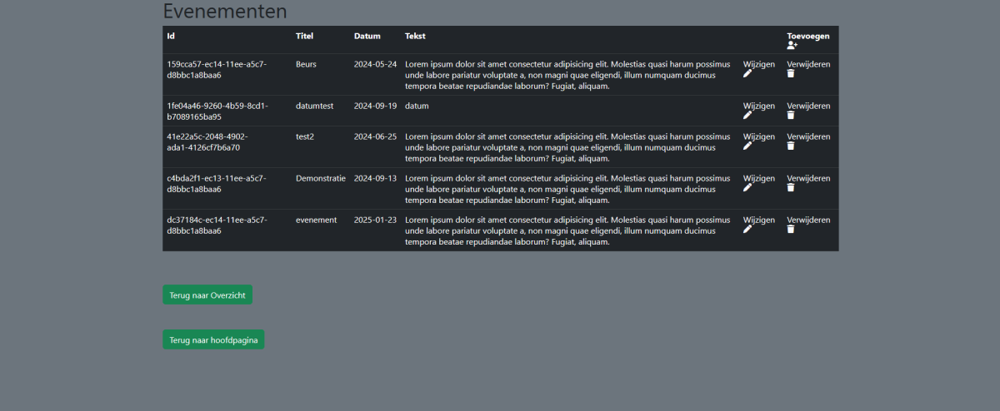
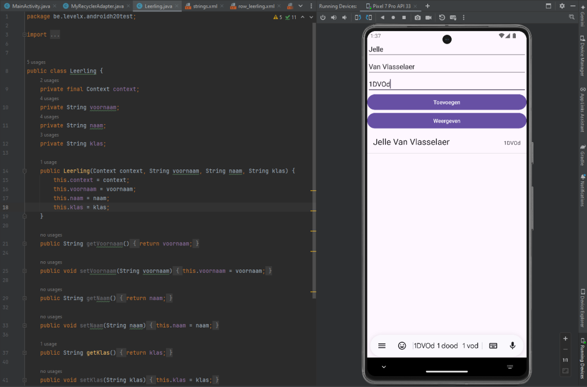
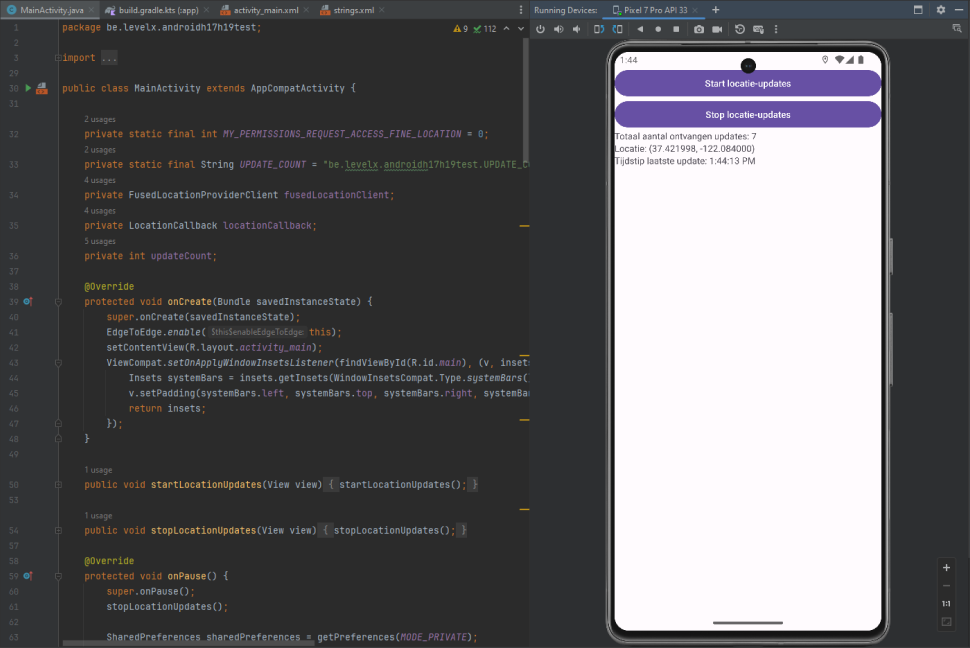
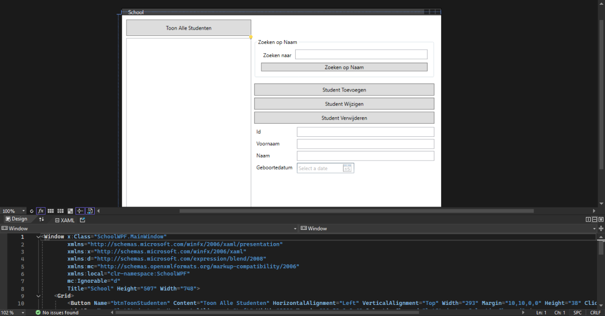
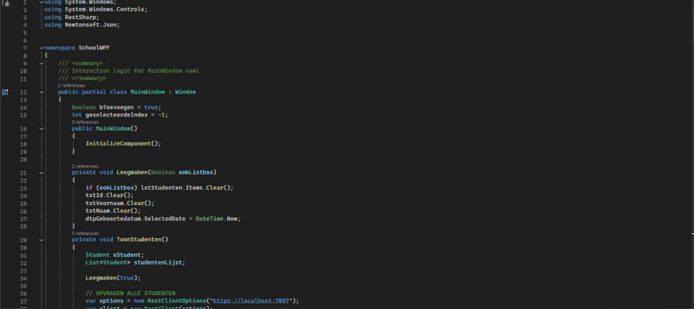

For my end project in middle school, I made a website for a customer. Due to unfortunate
circumstances,
this
website never went online. However, the website is fully functional in both the frontend and
backend.
I used HTML, CSS, Bootstrap, JavaScript, and PHP. It has a working contact page that can send emails
to
the
assigned email address. If the customer wanted to change anything on
the
site, such as images, text, or cards with certain information, it would automatically update on the
site
itself.
Contact page frontend
Event page backend

In middle school I made some smaller applications with Java. Such as making an arraylist and keeping
the
data, even if the application closes, or an application that can track the users location and gives
time
stamps on when the data was collected.
I don’t have a lot of expierence in Java yet but i’d like to learn more about it when the time is
right.
App with data from arraylist
Location tracking app

I also made some minor sites or applications outside of school. Mainly with Html, css and PHP. For a
while I learned xml, cs and c#. But I learned quickly that those languages interest me way less then
Javascript or PHP.
But perhaps I might dig deeper into those languages too. The more languages I can work with, the
more
doors will open for me.
Xml page
Xaml.cs page
